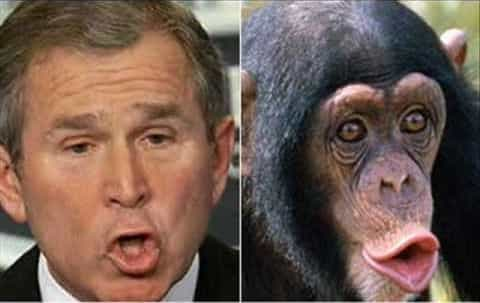

It’s a common catchphrase that “There are no races; there’s only the human race.” To be technical, humanity is a species, but there I go being a spoilsport. Once again to be technical, the biological definition of species is:
…a category of biological classification ranking immediately below the genus or subgenus, comprising related organisms or populations potentially capable of interbreeding…
As it happens, the USSR attempted to prove the human race species is much more inclusive than expected. Even in today’s “anything goes” climate, this monkey business seems a wee bit odd.
Ilya Ivanov’s background
Ilya Ivanovich Ivanov was a professor and researcher in biology. He became an animal reproduction specialist, pioneering artificial insemination. This technique was essential to his next act, hybridization. Ivanov crossed several different types of animals: cattle and buffalo, cattle and antelopes, zebras and donkeys, rats and mice, mice and guinea pigs, guinea pigs and rabbits, etc.
This blurs the definition of what we originally considered distinct species. So these animals are inter-fertile, yet generally prefer to breed with their own kind, unless there is unnatural outside influence. Here, the influence involved Professor Ivanov’s turkey baster. In 1910, he aired the idea of crossing humans and apes before the World Congress of Zoologists—quite likely one of their more memorable conferences.
Is it possible? Humans and chimpanzees have 98% of DNA in common. Humans have 23 pairs of chromosomes and chimpanzees have 24 pairs. still, Professor Ivanov managed to interbreed some species despite a dissimilar number of chromosomes. Following the Russian Revolution, he got his chance to test the idea.
Monkey business
A New Science article states:
Despite the disapproval of the scientific establishment Ivanov got the go-ahead – and the funds to mount an expedition to Africa to collect apes. Documents show that the decision was pushed through by leading members of the Bolshevik government.
Ivanov first went to Paris in February 1926. The next month, he journeyed to colonial French Guinea, arriving at a primate research station in Kindia. However, they didn’t have any sexually mature chimpanzees. Then he went back to Paris and compared notes on capturing primates with Serge Voronoff, the “monkey gland” surgeon.
In November, Ivanov returned to Africa. He and his son rounded up some female chimps and, at the island of Conakry, tried to get three of them pregnant. (This involved the turkey baster procedure, rather than a dinner date and a movie.) Despite their efforts, the experiment didn’t work.
This convinced him that he was doing it wrong. His next idea was to impregnate women with ape sperm. He wanted to do this to some local women under the guise of medical examinations. The colonial governor refused to allow this, quite sensibly. Score one for the governor.
More monkeying around

However, Ivanov wasn’t deterred. In 1929, he set up shop in Sukhumi, in the now politically unstable region of Abkhazia. His primate research station would later conduct studies on radiation exposure and vaccines. He got five women to volunteer for insemination. It’s unclear how freely they cooperated; some accounts say they were prisoners.
However, Tarzan the Orangutan, his only mature male candidate, died. As a New York times op-ed from October 2005 put it:
Next Ivanov wrote a Cuban heiress, Rosalia Abreu. Abreu was the first person to breed chimps in captivity and had a large menagerie outside Havana. Ivanov asked if any of her male chimpanzees might be available to inseminate a Russian volunteer known to posterity only as ‘G.”
At first Abreu was agreeable. But Ivanov made the mistake of approaching Charles Smith of the American Association for the Advancement of Atheism for fund-raising support. Smith was something of a showman—he liked to appear in public with a chimpanzee dressed in a business suit—and went to the newspapers with Ivanov’s proposal. The New York Times thundered, “Soviet Backs Plan to Test Evolution.”
The resulting publicity brought the case to the attention of the Ku Klux Klan, which threatened Abreu with retaliation if she took part in Ivanov’s experiment, calling it “abominable to the creator.” Abreu withdrew her consent.
Score one for Fraternity Tri-Kappa. Ivanov ordered some primates for the facility, but most of them died in transit.
The end (not)
The ape-man project was plagued with problems since the beginning, but politics did it in. Lysenkoism became fashionable, and it was dangerous to be a biologist. He got arrested, sent into internal exile, and died two years later.
This already-strange tale has some rather odd twists and turns. Contrary to what we might expect, Ivanov wasn’t considered a kook in his day; his early research (before the ape-man stunt) did get results. Also, it obviously was a significant priority. The initial funding (which in 2017 would be equivalent to $140K) wasn’t a trivial amount to the USSR, which was doing a terrible job of feeding its citizens. Finally, it wasn’t exactly a secret. Still, the story was basically forgotten until the 1990s; interest picked up a bit after the archives became available.
Later, the Chinese carried on the effort. As the St. Petersburg Independent reported on 2/12/1981, the Chinese repeated Ivanov’s first experiment, and it actually worked. A three member team, including Ji Yongxiang, got a female chimp pregnant. The article doesn’t mention whether this was achieved through the turkey baster technique or the “Who Lies More?” routine.
Once again, political trouble doomed the project. He got arrested during the Chinese Cultural Revolution, and the pregnant chimp died of neglect. He indicated willingness to resume, which would be useful in creating a workforce customized for specialized tasks.
Was Ji Yongxiang blowing smoke, or am I a monkey’s uncle?
Ivanov’s motivation
So the major remaining question was why. Perhaps demonstrating the sanctity of human life wasn’t exactly a huge big priority. As one account puts it:
According to Moscow newspapers, Stalin told the scientist: “I want a new invincible human being, insensitive to pain, resistant and indifferent about the quality of food they eat.”
Still, until the original newspapers can be identified and cited, consider all that to be apocryphal. Reginald Urch’s book The Rabbit King Of Russia does indeed cite a couple of newspaper articles from Leningrad, dated 11/27/1925 and 12/5/1925. He summarized:
The task of the Ivanov expedition was simple. It was to go to the Congo and, if possible, induce the French Pasteur station working there under Professor Calmette to assist the Bolshevist scientists to catch a number of female chimpanzee apes. After this, Ivanov and his staff would endeavor to fertilize the apes by artificial methods and bring back the mothers with their little human apes to gladden the hearts of the anti-God Society in Soviet Russia and prove that “There is no God.”
The New Scientist article goes in depth on the possible motives, giving the following as the most likely:
The high-ranking Bolsheviks who backed Ivanov were intellectuals who saw science as a means of realising their dream of a socialist utopia. “Politicians could change the political system, nationalise industries and turn farms into vast collectives—but the task of transforming people was entrusted to scientists,” says Etkind. “The aim was to match people to the socialist design of Soviet society.”
One way to do that was through “positive eugenics”, using [artificial insemination] to speed up the spread of desirable traits—a willingness to live and work communally, for instance—and to get rid of “primitive” traits such as competitiveness, greed and the desire to own property. “There were many projects aimed at changing humanity,” Etkind says. “Ivanov’s was the most extreme but if he succeeded then that would show that humans could be changed in radical and creative ways.”
Most eugenicists at the time wanted to promote high intelligence and prevent a population explosion of people perpetually dependent on the government. The Communist version of eugenics apparently didn’t share that goal. Actually, crossbreeding people with apes would be an efficient way of producing a population too dull to question government policies or the sociopolitical status quo.
Trying to manipulate the gene pool to produce compliant citizens, born to conform to leftist goals… why does that sound so familiar?
Read More: Is Genocide On The Elite Agenda?